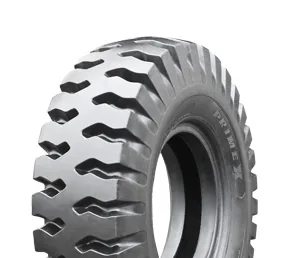
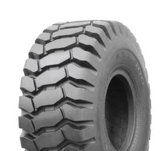
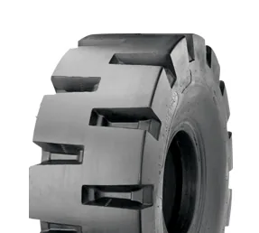
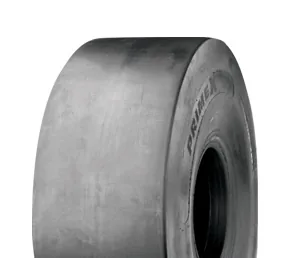
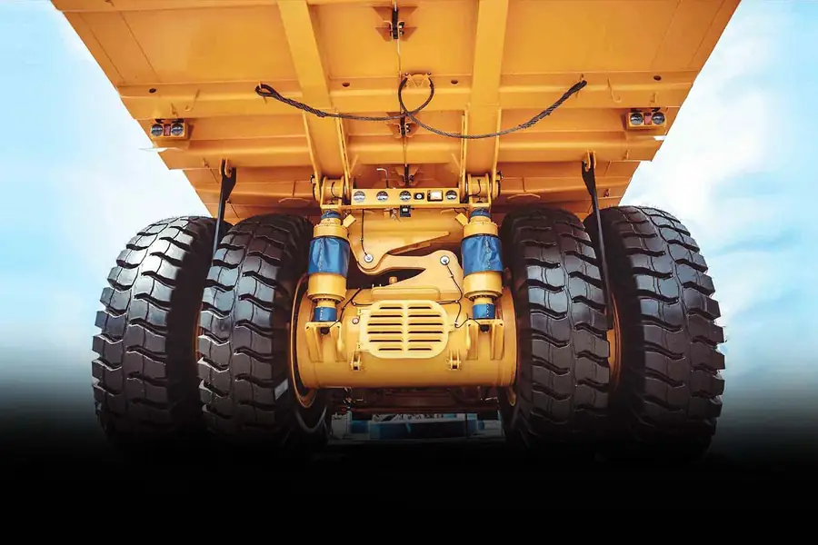

Rock tread (E-4)
Deep rock lugs for haul trucks and ADTs on abrasive haul roads and pits.
Off-the-road tyres for dump trucks, wheel loaders, LHDs and underground equipment — Primex and Galaxy E-3, E-4 and L-5 ranges, supplied to mines across Zimbabwe.
Find your tyre
Tap a size to check stock and we’ll pre-fill the quote. Need a size or tread not listed? We source OTR tyres to order.
23.5 = width in inches · - = bias (cross-ply), R = radial · 25 = rim in inches. Sizes like 18.00-33 work the same way.
E = earthmover/haulage, L = loader/dozer · 3 = traction · 4 = rock · 5 = extra-deep rock · S = smooth (underground).
What we supply

Deep rock lugs for haul trucks and ADTs on abrasive haul roads and pits.

Open lugs for grip and self-cleaning on soft ground, sand and mud.

Very deep, cut-resistant tread for loaders working rock faces and stockpiles.

Smooth, extra-deep tread for LHDs and underground loaders on sharp, wet floors.
18.00-33, 21.00-35, 23.5-25 and 29.5-25 for rigid haul trucks and articulated dump trucks.
Bias tyres for cut resistance and value; radials for heat, comfort and long hours on haul roads.
Mine operators
Plan your mine’s tyre supply ahead. Send us your fleet and consumption and we’ll quote E-3, E-4 and L-5 tyres with delivery to site.
Get a mining quote
Why mines choose Proclassic
Fast quote
Send the size and tread code (e.g. 23.5-25 L-5), the machine and quantity. We check stock and reply on WhatsApp with availability, lead time and price.
Questions
Send the size and tread code on WhatsApp and we’ll confirm stock and lead time for your mine.
Ask on WhatsAppWe supply common loader, ADT, haul-truck and grader sizes including 17.5-25, 20.5-25, 23.5-25, 26.5-25, 29.5-25, 23.5R25, 18.00-25, 18.00-33, 21.00-35, 14.00-24, 12.00-24 and 1400R24, in Primex and Galaxy ranges. Other sizes can be sourced to order.
They are standard OTR tread codes. E is for earthmover/haulage machines (dump trucks, ADTs) and L is for loaders and dozers. 3 is a traction tread, 4 a rock tread with deeper rubber, 5 an extra-deep rock tread for severe cutting, and S means smooth — used underground where lugs would be cut by sharp rock.
Bias (cross-ply) tyres have stiff, cut-resistant sidewalls and a lower purchase price, suiting short hauls and rocky loading areas. Radial tyres run cooler, give a smoother ride and usually last longer on long haul cycles. We’ll recommend based on your machine, haul distance and ground.
The first number is the tyre width in inches and the last is the rim diameter in inches. A dash means bias construction and an R means radial (e.g. 23.5R25). The tread code (E-3, L-5, etc.) and ply or star rating are also marked on the sidewall.
Yes. We supply mines and mining contractors with bulk and planned orders so critical sizes are available when you need them. Tell us your fleet and monthly consumption in the quote form.
Yes. We deliver nationwide across Zimbabwe from our Harare and Mutare branches. Tell us the site location when you request a quote.
OTR prices depend on size, tread, ply rating and availability, so we quote each request. Send your size on WhatsApp and we reply with stock, lead time and price.